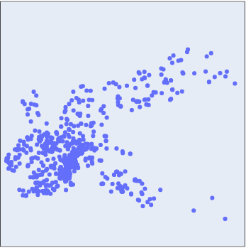
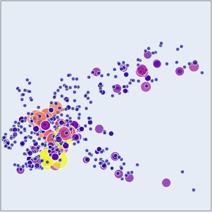
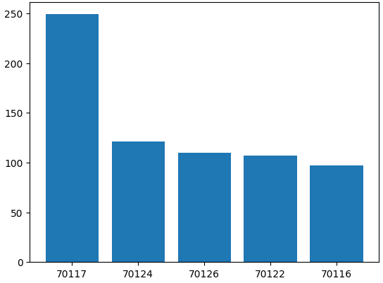
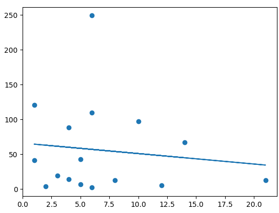
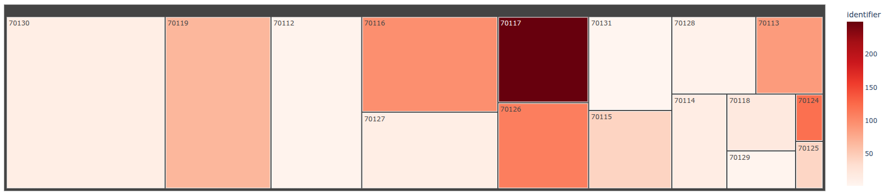

This graph reflects the top 5 zip codes that contain the most amount of businesses in them.

This graph reflects the top 5 zip codes and the percentage each of them are compared to each other.

This graph reflects the location of every business in New Orleans.
This graph reflects the location of every zip code in New Orleans, with zip codes having more businesses turning closer to yellow and becoming bigger.
This graph reflects the top 5 zip codes with the most blighted housing.
This graph shows the amount of businesses compared to the amount of housing in every zip code. The amount of businesses is shown horizontally, and the amount of blighted housing vertically.
In this graph, each box is sorted by zip code. The color is representing the amount of blighted properties, while the size of the box shows the amount of businesses.
